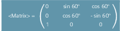

Die Funktion LENTOAX liefert Informationen über die Zuordnung der Werkzeuglängen L1, L2 und L3 des aktiven Werkzeugs zu Abszisse, Ordinate und Applikate. Die Zuordnung von Abszisse, Ordinate und Applikate zu den Geometrieachsen wird durch Frames und die aktive Ebene (G17 ... G19) beeinflusst.
Betrachtet wird dabei nur der Geometrieanteil eines Werkzeugs ($TC_DP3[<t>,<d>] bis $TC_DP5[<t>,<d>]), d. h., eine gegebenenfalls davon abweichende Achszuordnung weiterer Komponenten (z. B. Verschleiß) hat auf das Ergebnis keinen Einfluss.
| Vordefinierte Funktion zum Lesen der Zuordnung der Werkzeuglängen L1, L2 und L3 des aktiven Werkzeugs zu den Koordinatenachsen | |||
Alleine im Satz: | ja | |||
| Rückgabewert der Funktion. Negative Werte zeigen Fehlerzustände an. | |||
Datentyp: | INT | |||
Wert: | 0 | Funktion OK Information in <AxInd> reicht zur Beschreibung aus (alle Werkzeuglängenkomponenten sind parallel zu Geometrieachsen). | ||
1 | Funktion ist OK, zu einer korrekten Beschreibung muss aber der Inhalt von <Matrix> ausgewertet werden (die Werkzeuglängenkomponenten sind nicht parallel zu den Geometrieachsen). | |||
-1 | Ungültiger String im Parameter <Coord>. | |||
-2 | Kein Werkzeug aktiv. | |||
Parameter | ||||
1 |
| Sind die Werkzeuglängenkomponenten parallel zu den Geometrieachsen, werden die Achsindizes, die den Längenkomponenten L1 bis L3 zugeordnet sind, im Feld <AxInd> zurückgeliefert:
| ||
Datentyp: | INT[3] | |||
Wert: | 0 | Keine Zuordnung vorhanden (Achse existiert nicht) | ||
1 ... 3 bzw. -1 ... -3 | Nummer der Länge, die in der entsprechende Koordinatenachse wirkt. Das Vorzeichen ist negativ, wenn die Werkzeuglängenkomponente in negative Koordinatenrichtung zeigt. | |||
Sind nicht alle Längenkomponenten parallel bzw. antiparallel zu den Geometrieachsen, wird in <AxInd> jeweils der Index der Achse zurückgegeben, die den größten Anteil einer Werkzeuglängenkomponente enthält. In diesem Fall (falls die Funktion nicht aus einem anderen Grund einen Fehler liefert) ist der Rückgabewert <Status> = 1. Die Abbildung der Werkzeuglängenkomponenten L1 bis L3 auf die Geometrieachsen 1 bis 3 wird dann durch den Inhalt des 2. Parameters <Matrix> vollständig beschrieben. | ||||
2 |
| Matrix, die den Vektor der Werkzeuglängen (L1=1, L2=1, L3=1) in den Vektor der Koordinatenachsen (Abszisse, Ordinate, Applikate) abbildet, d. h., den Spalten sind die Werkzeuglängenkomponenten in der Reihenfolge L1, L2, L3 zugeordnet, den Zeilen die Achsen in der Reihenfolge Abszisse, Ordinate, Applikate. | ||
Datentyp: | REAL | |||
In der Matrix sind immer alle Elemente gültig, auch dann, wenn die zu einer Koordinatenachse gehörende Geometrieachse nicht vorhanden ist, d. h. wenn der entsprechende Eintrag in <AxInd> null ist. | ||||
3 |
| Koordinatensystem, für das die Zuordnung gilt (optional) | ||
Datentyp: | STRING | |||
Zeichen: | MCS M | Abbildung der Werkzeuglänge in das Maschinenkoordinatensystem | ||
BCS B | Abbildung der Werkzeuglänge in das Basiskoordinatensystem | |||
WCS W | Abbildung der Werkzeuglänge in das Werkstückkoordinatensystem (Default) | |||
KCS K | Abbildung der Werkzeuglänge in das Werkzeugkoordinatensystem der kinematischen Transformation | |||
TCS T | Abbildung der Werkzeuglänge in das Werkzeugkoordinatensystem | |||
Die Schreibweise der Zeichen im String (groß oder klein) ist beliebig. Wird der Parameter <Coord> nicht angegeben, wird das WKS verwendet (Default). | ||||
| Hinweis |
Im TCS sind immer alle Werkzeuglängenkomponenten parallel oder antiparallel zu den Achsen. Antiparallel können die Komponenten nur dann sein, wenn Spiegeln aktiv ist und das folgende Settingdatum gesetzt ist: SD42900 $SC_MIRROR_TOOL_LENGTH (Vorzeichenwechsel Werkzeuglänge beim Spiegeln) |
Standardfall Fräswerkzeug bei G17.
L1 wirkt in Z (Applikate), L2 wirkt in Y (Ordinate), L3 wirkt in X (Abszisse).
Aufruf der Funktion in der Form:
<Status>=LENTOAX(<AxInd>,<Matrix>,"WCS")Der Ergebnisparameter <AxInd> enthält dann die Werte:
<AxInd>[0] = 3
<AxInd>[1] = 2
<AxInd>[2] = 1
oder kurz: ( 3, 2, 1)
Die zugehörige Matrix (<Matrix>) ist in diesem Fall:
Ein Wechsel von G17 nach G18 oder G19 ändert am Ergebnis nichts, da die Zuordnung der Längenkomponenten zu den Geometrieachsen sich in gleicher Weise ändert wie die Zuordnung von Abszisse, Ordinate und Applikate.
Es wird nun bei aktivem G17 eine Framedrehung um Z von 60 Grad programmiert, z. B.:
ROT Z60Die Richtung der Applikate (Z-Richtung) bleibt unverändert, der Hauptanteil von L2 liegt nun in Richtung der neuen X-Achse, der Hauptanteil von L1 in Richtung der negativen Y-Achse. Der Rückgabewert (<Status>) ist deshalb "1", <AxInd> enthält die Werte (2, -3, 1).
Die zugehörige Matrix (<Matrix>) ist in diesem Fall:
